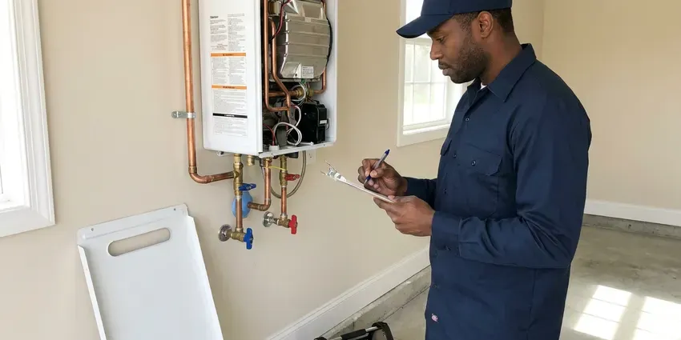
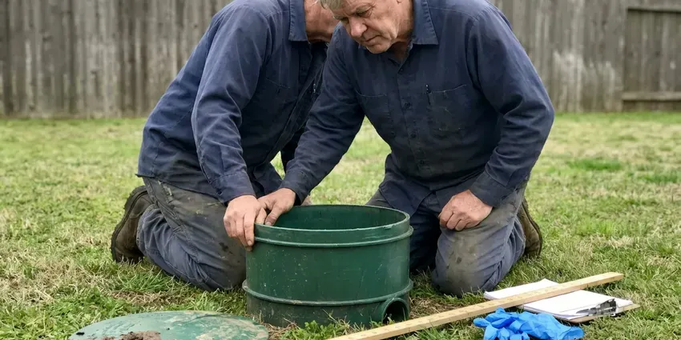

Copper Pipe Leak Repair in Casper, WY
Copper leak repair in Casper, WY that addresses water chemistry, pressure and grounding.
- Nearby Pipe Inspected
- Thermal Imaging
- Repipe Options If Pinholes Keep Coming
- Small Access Cuts

Leaking Copper Pipe? Get a Lasting Repair in Casper, WY
We locate the leak, repair it cleanly and tell you straight whether more pinholes are likely.
Copper Pipe Leak Repair in Casper, WY
JKV Plumbing handles every copper leak as a question of why. Pressure is often part of it. A house running above 80 psi wears copper faster and blows out fittings, which is why we test the static pressure before we leave. It takes five minutes.
Work we handle every week:
- Inspection of nearby copper for thinning, pitting and green crust
- Lead-free soldering and press fitting repairs
- Electronic leak detection under slabs

Additional Plumbing Repair Services in Casper, WY
We offer expert plumbing repair services across Casper, WY to fix leaks, restore flow, and keep your system running smoothly.




Tankless Water Heater Repair in Casper

Septic Tank Repair near Casper

Customers
Why Choose JKV Plumbing for Copper Pipe Leak Repair in Casper, WY?
Every repair ends with a pressure test. The gauge tells the story. We bring the line back to working pressure and check each joint we touched, while checking the surrounding copper for signs of the next failure. You hear what we see.
- Quality Copper, We repair with Type L copper or press fittings for a heavier wall than the original.
- Precise Detection, Thermal imaging pinpoints hot and cold copper leaks without opening extra drywall.
- Honest Advice, We tell you when repeated pinholes mean a repipe will save money.
Citywide Coverage
Landlords and property managers across Casper call us for repeat pinholes at the same units. It is usually thin pipe. We find the cause, fix it, and record what we found so future visits go faster.
Experienced Team
Our plumbers have soldered thousands of copper joints in attics, crawlspaces and finished walls. They work clean. A plumber who has done that much copper knows how to cut one square of drywall in the right spot, which keeps the repair small and the patch afterward simple.
Safety-First Approach
Copper water pipe is often part of the home's electrical ground. We keep it bonded. When we cut out a section or add a PEX transition, we make sure the grounding path is restored with a jumper so the electrical system stays safe.
Trusted Certified Casper Plumbing Services Professionals
At JKV Plumbing, we are proud to offer certified plumbing services throughout Casper, WY. Those papers on the wall mean something. Every repair, install and maintenance visit follows strict safety and quality rules, and the plumbers doing the work carry recognized industry credentials.
Call Us Now PHCC Plumbing Contractor Recognition
PHCC Plumbing Contractor Recognition Better Business Bureau (BBB) Accreditation
Better Business Bureau (BBB) Accreditation Angi Certified Pro
Angi Certified Pro ISO 9001 Quality Management Certification
ISO 9001 Quality Management CertificationEvery Kind of Copper Leak, Repaired in Casper, WY
Pinhole Leak Repair in Casper
Pinholes start inside the pipe where the copper wall pits and thins. You see a drip or a stain. They are small and easy to miss behind drywall, which is why we use thermal imaging to find them before we open anything. We replace the pitted length with Type L. We look at the copper around it.

Underground Copper Pipe Leak Repair in Casper
Buried copper service lines can leak for months before anyone notices. The meter gives it away. We locate the leak with acoustic gear and tracer gas, and either spot repair it or swap in a new service line with minimal digging. We test before backfill.
Copper Repair vs Repipe Cost in Casper, WY
A single copper leak repair is affordable and fast. Repeated leaks change the math. If you have had two or more pinhole leaks in a year, the copper is likely thinning throughout the system, so repiping often beats another round of spot fixes on total cost. We price both.
Commercial Copper Pipe Leak Repair in Casper
Commercial buildings often run larger diameter copper for domestic water. Shutdowns cost money. We repair copper supply lines in offices, restaurants and apartment buildings, using press tools on large lines to shorten the shutdown and skip the torch. Early or late work is available.
Emergency Copper Leak Services in Casper
A pinhole can widen without warning and spray water into a wall. We answer after hours. We talk you through closing the main valve, then send a plumber to find the leak, cut out the bad section and make a permanent repair on the first visit in most cases, since the trucks carry copper and press fittings. We flag wet drywall right away.
Hot Water Copper Line Repair in Casper, WY
Hot water lines corrode faster than cold lines. Temperature drives it. Recirculation pumps that run around the clock push water through the copper at high velocity and wear it from the inside, which is why we often add a timer to the pump after fixing the leak. Less run time, less wear.
Commercial Copper Pipe Leak Services in Casper, WY
In a commercial building, one copper leak can affect several tenants at once. Shutdowns need coordination. We isolate the smallest zone possible and repair the leak with press fittings or solder, working before opening or after close when the building has to stay running. Records are available for managers.

Copper Pipe Joint Leak Repair in Casper, WY
Joints leak from poor original soldering, thermal expansion or a house that settles. Basements and crawlspaces are both common in Wyoming homes, and both need protection from freezing and groundwater. A crusty fitting is the clue. We inspect each joint near the leak for weeping or mineral buildup, and either resolder it properly or swap the fitting for a new one. Every joint gets tested.
Nearby Copper Leak Repair in Casper, WY
Searching for copper pipe leak repair near me in Casper, WY usually means you spotted a stain or heard dripping. We can often come the same day. Our plumbers carry Type L copper, press fittings and thermal cameras, which means one visit usually covers locating and repair.
You want a plumber who shows up on time and fixes the leak without a week of back and forth. We built our service around that. One plumber finds it, the same plumber repairs it, and you get a price on paper before any work begins.
JKV Plumbing at a Glance
- Fully licensed plumbing team covering Casper, WY
- 24/7 emergency service with same-day scheduling
- Upfront, flat-rate pricing before work begins
- 4.9-star rated by 782+ Wyoming customers
Casper Map
Casper Information
- Population
- 58,720
- Area codes
- 307/406/435
- Service area
- Casper and communities within 40 miles
- Nearby
- Douglas, Rawlins, Riverton, Gillette
Cold snaps and settling foundations put strain on copper joints in Casper, WY homes, so a small leak deserves a quick repair. Shutting off and draining outdoor faucets and irrigation lines before the first hard freeze heads off many spring repairs.
Expert Services
Reach out to JKV Plumbing for reliable plumbing work done by licensed pros in Casper, WY.
Our Specialized Plumbing Services in Casper, WY
At JKV Plumbing, we handle the full list of plumbing services across Casper, WY. We go from leak detection all the way to full system installations, for homes and commercial buildings, and we do it quickly at a fair price. Here are the core services we offer:


Find It, Fix It, Test It in Casper, WY
Every copper repair in Casper follows the same order: find it, price it, fix it, prove it.
Tell Us What You See
Call (307) 393-4049 and describe the water, stains or dripping. We will get someone out quickly.
Pinpoint the Leak
We locate the leak with thermal imaging and moisture meters before cutting anything. Then you get a price.
Repair and Inspect
We replace the damaged copper and pressure test the line. Surrounding copper gets a look.
Frequently Asked Questions About Copper Pipe Leak Repair in Casper
A simple solder repair usually runs $200 to $500. Hidden pipe costs more. A slab leak that needs specialized detection and repair could range from $800 to $3,000 or more, especially when the line has to be rerouted instead of repaired in place. We price it once we know the cause.
Often, yes. Pitting spreads along a run. If one section of copper has thinned enough to leak, nearby pipe may be close behind, so we inspect the area around each repair and tell you what we see. You decide what to do next.
A visible pinhole or a small section is usually done in two to four hours. Slab work takes longer. Slab leaks or a repipe can take a full day or more, with the method and access setting the pace. We tell you up front.
Water chemistry is a big factor. Hard, mineral-heavy water is common across Wyoming, and scale builds up fast in water heaters, faucets and appliances. Pressure matters too. Water that is too acidic or too alkaline, aggressive soil around buried pipe, high pressure, poor installation and foundation movement can all thin copper or stress joints until they leak. Most leaks have two or three causes.
Most accessible repairs take one to two hours. Hidden leaks run longer. Leaks inside walls or ceilings can take two to four hours, and slab leak repairs may take a full day depending on whether the line is repaired in place or rerouted. You hear the schedule up front.
Wall thickness. Type K is the heaviest. Type K is used for underground service lines, Type L is the standard for interior water lines in many codes, and Type M has the thinnest wall, which is why it tends to pinhole first in older homes. Our repairs use Type L.
We do. Length depends on the repair. A single joint repair and a section replacement carry different terms because the parts and the risks are different, so you see the coverage for your specific repair in writing up front. Manufacturer warranties stack on top.
Shut off the main water valve. Then call (307) 393-4049. Turning off the main stops the damage while you wait, and opening a low faucet drains the pressure out of the line so the leak slows to a drip. Move valuables away from the water. We will walk you through it if needed.
Hear From Customers Who Hired Our Plumbing Experts
Carlos V.
Our house still had galvanized pipe, and upstairs the shower was a trickle. The crew repiped everything in PEX over three days and patched every drywall hole before they left. The pressure difference is night and day.
Repiping · Riverton, WY
Angela D.
Our sump pump quit during a storm and the water was an inch from the basement carpet. JKV Plumbing put in a new pump with a battery backup that same evening. We have had two heavy rains since. It kicked on both times.
Sump Pump · Gillette, WY
Kevin O.
Before buying our house I paid for a sewer camera inspection. JKV Plumbing found a belly in the line that held standing water about forty feet from the cleanout. We used the video to get the sellers to fix it before closing.
Sewer Camera Inspection · Torrington, WYRobert G.
The camera showed a full break in our clay sewer line near the street. JKV Plumbing replaced it with a trenchless pipe burst, so the only digging was two small pits in the yard. They let us watch the footage before and after.
Sewer Line Replacement · Douglas, WY
Mark T.
The floor drain in our office break room backed up every few weeks. The plumber ran a cable, then put a camera down and found roots at a joint about thirty feet out. Seeing it on the screen made the decision easy.
Drain Cleaning · Douglas, WYGreg S.
I manage a small strip center with six tenants. JKV Plumbing handles our annual backflow testing and fixed a recurring clog in the shared sewer line that had been backing into the nail salon. Their reports come in clean and on time.
Commercial Plumbing · Casper, WY